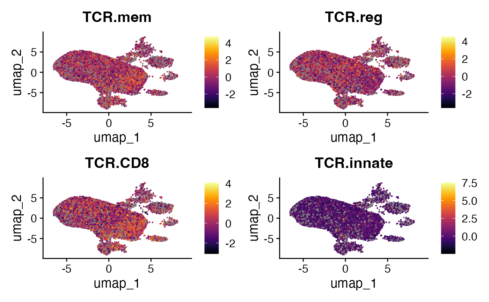
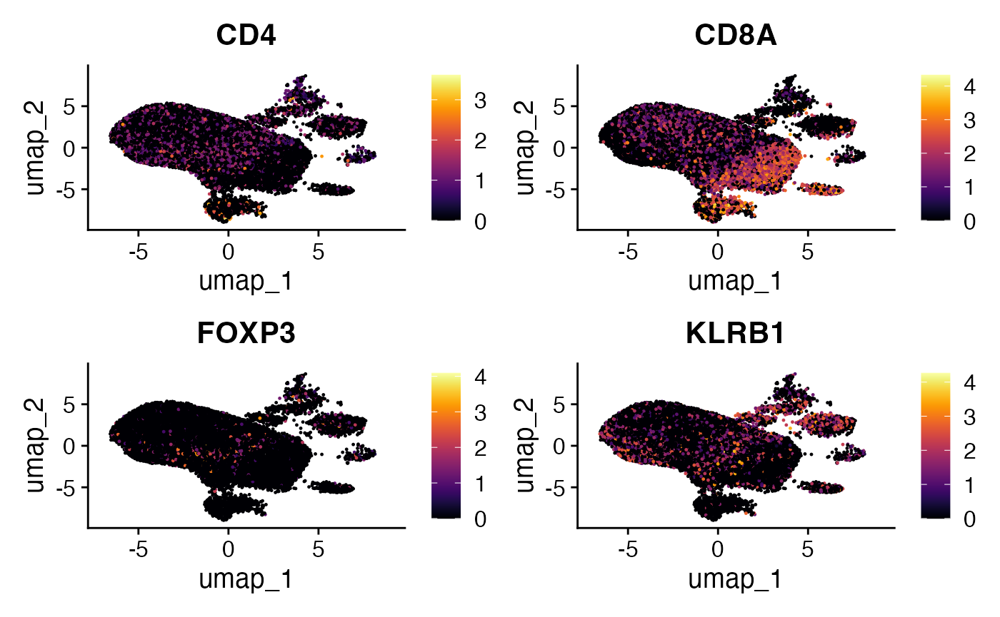

TCRpheno applied to T cell fate
Compiled: April 03, 2026
Source:vignettes/articles/tcrpheno.Rmd
tcrpheno.RmdOverview
tcrpheno is an R package that applies a logistic
regression model to the amino acid sequences of T-cell receptor
complementarity-determining regions (CDRs) 1, 2, and 3. This model
produces phenotype scores associated with specific T cell fates,
providing insights into the potential functional trajectory of T cells
based on their TCR sequences.
More information on individual phenotypes:
The tcrpheno package calculates four distinct scores, each linked to a potential T cell phenotype
-
TCRinnate: Higher scores suggest a greater
likelihood of the T cell adopting an innate-like, PLZF-high
phenotype, characteristic of mucosal-associated invariant T (MAIT) cells
or invariant natural killer T (iNKT). This score is strongly influenced
by features in CDR2α and specific TRAV gene usage.
-
TCR.8: Higher scores indicate a predisposition
towards a CD8+ T cell fate over a CD4+ fate. TCRs with high TCR.8 scores
tend to have a depletion of positive charge in the mid-region of their
CDR3 loops.
-
TCRreg: Higher scores point to an increased
probability of the T cell becoming a regulatory T cell (Treg),
encompassing both CD4+ and CD8+ Treg populations. This is associated
with increased hydrophobicity in CDR3β and CDR3α residues.
- TCRmem: Higher scores suggest a T cell is more likely to differentiate into a memory cell rather than remaining naive. This score reflects a general propensity for T-cell activation and is influenced by features in both CDR3α and CDR3β. Notably, higher TCRmem scores correlate with increased T-cell activation even among T cells recognizing the same antigen and correspond to the strength of positive selection in the thymus.
Citation
If using tcrpheno, please cite the article: Lagattuta, K. et al. The T cell receptor sequence influences the likelihood of T cell memory formation. Cell Reports. 2025 Jan 28;44(1)
Installation
# Ensure 'remotes' is installed: install.packages("remotes")
remotes::install_github("kalaga27/tcrpheno")Loading Data
his vignette uses example data provided by the scRepertoire package to demonstrate the workflow. For more details on scRepertoire’s example data and loading mechanisms, refer here. For the sake of comparison, we will also filter out any cell without clonal information.
# Load and normalize RNA
scRep_example <- readRDS("scRep_example_full.rds") %>%
NormalizeData(verbose = F)
# Adding Clonal Information
scRep_example <- combineExpression(combined.TCR,
scRep_example ,
cloneCall="aa",
group.by = "sample",
proportion = TRUE)
#Filtering for single-cells with TCRs
scRep_example <- subset(scRep_example,
cells = colnames(scRep_example)[!is.na(scRep_example$CTaa)])Exporting Clonal Information for tcrpheno
The tcrpheno package requires TCR data in a specific
format. The exportClones() function from scRepertoire can
now output data directly in this tcrpheno format. This
format includes separate columns for TRA V gene, TRA J gene, TRA CDR3
sequence, TRB V gene, TRB J gene, and TRB CDR3 sequence, along with a
cell identifier.
exported_clones <- exportClones(scRep_example,
write.file = FALSE,
format = "tcrpheno")
exported_clones <- na.omit(exported_clones)
head(exported_clones)## cell TCRA_cdr3aa TCRA_vgene TCRA_jgene
## 1 P17B_AAAGCAACAGACAAAT-1 CALFTSGNTGKLIF TRAV16 TRAJ37
## 2 P17B_AACCATGAGGCATGTG-1 CAVEDPRDYKLSF TRAV2 TRAJ20
## 4 P17B_AAGCCGCCAATCTACG-1 CALSEARETGNQFYF TRAV19 TRAJ49
## 5 P17B_AAGCCGCCATCCCACT-1 CAASINNNARLMF TRAV13-1 TRAJ31
## 6 P17B_AAGCCGCGTCACCTAA-1 CAVQAGDSWGKLQF TRAV20 TRAJ24
## 7 P17B_AAGGAGCGTTCTCATT-1 CATAPRDSWGKLQF TRAV17 TRAJ24
## TCRA_cdr3nt TCRB_cdr3aa TCRB_vgene
## 1 TGTGCTCTCTTTACCTCTGGCAACACAGGCAAACTAATCTTT CAIKGTGNGEQYF TRBV10-3
## 2 TGTGCTGTGGAGGATCCTCGGGACTACAAGCTCAGCTTT CASSLGGAGGGYEQYF TRBV11-2
## 4 TGTGCTCTGAGTGAGGCGAGGGAAACCGGTAACCAGTTCTATTTT CASSQDADSFYEQYF TRBV4-1
## 5 TGTGCAGCAAGTATAAATAACAATGCCAGACTCATGTTT CASSPVRTDTQYF TRBV5-4
## 6 TGTGCTGTGCAGGCCGGTGACAGCTGGGGGAAATTGCAGTTT CASSLDGGSDTQYF TRBV11-3
## 7 TGTGCTACGGCCCCCAGGGACAGCTGGGGGAAATTGCAGTTT CASSLYDTNTGELFF TRBV5-1
## TCRB_jgene TCRB_cdr3nt
## 1 TRBJ2-7 TGTGCCATCAAGGGGACAGGGAATGGTGAGCAGTACTTC
## 2 TRBJ2-7 TGTGCCAGCAGCTTGGGGGGCGCGGGTGGGGGCTACGAGCAGTACTTC
## 4 TRBJ2-7 TGCGCCAGCAGCCAAGATGCGGACAGCTTCTACGAGCAGTACTTC
## 5 TRBJ2-3 TGTGCCAGCAGCCCCGTTCGAACAGATACGCAGTATTTT
## 6 TRBJ2-3 TGTGCCAGCAGCTTAGACGGGGGCTCAGATACGCAGTATTTT
## 7 TRBJ2-2 TGCGCCAGCAGCTTGTACGACACAAACACCGGGGAGCTGTTTTTTGenerating Phenotype Scores
With the TCR data correctly formatted, we can use the
score_tcrs() function from the tcrpheno
package to calculate the phenotype scores.
tcrpheno.results <- score_tcrs(exported_clones, "ab")## [1] "adding CDR1 and CDR2 based on V gene..."
## [1] "identifying amino acids at each position..."
## [1] "converting amino acids into Atchley factors..."
## [1] 18670
## [1] 18670
## [1] "adding interactions between adjacent residues..."
## [1] "TCRs featurized!"
## [1] "scoring TCRs..."
## [1] "all done!"
head(tcrpheno.results)## TCR.innate TCR.CD8 TCR.reg TCR.mem
## P17B_AAAGCAACAGACAAAT-1 -0.0675532 -1.19523036 0.4049552 -0.1555845
## P17B_AACCATGAGGCATGTG-1 0.6501125 0.02883556 -1.1217330 -0.1431962
## P17B_AAGCCGCCAATCTACG-1 0.2681321 3.05374879 -0.8430967 -0.1919169
## P17B_AAGCCGCCATCCCACT-1 -0.1228840 -0.97613780 0.4996984 -1.2836692
## P17B_AAGCCGCGTCACCTAA-1 -0.6160124 0.27602943 -1.0244453 0.5860345
## P17B_AAGGAGCGTTCTCATT-1 -0.1305800 -0.06879752 0.3131880 -0.2055134Adding to Single Cell Object
To visualize and analyze these TCR-derived phenotype scores in conjunction with gene expression data, we add them to the metadata of our Seurat object.
scRep_example <- AddMetaData(scRep_example, tcrpheno.results)Visualizing Predictions
Now that the phenotype scores are part of the Seurat object, we can visualize them on dimensionality reduction plots, such as UMAPs. This helps to see if cells with particular TCR-derived phenotype scores cluster together or co-localize with known cell populations.
tcrpheno.plots <- FeaturePlot(scRep_example,
features = c("TCR.mem",
"TCR.reg",
"TCR.CD8",
"TCR.innate"))
lapply(tcrpheno.plots, function(x) {
x + scale_color_viridis(option = "B")
}) -> tcrpheno.plots
wrap_plots(tcrpheno.plots)
Comparing With Gene Expression
A key aspect of integrating TCR phenotype scores is to compare them
with the expression of known marker genes associated with different T
cell states. This can help validate or provide biological context to the
tcrpheno predictions.
RNA.plots <- FeaturePlot(scRep_example,
features = c("CD4","CD8A", "FOXP3", "KLRB1"),
combine = FALSE)
lapply(RNA.plots, function(x) {
x + scale_color_viridis(option = "B")
}) -> RNA.plots
wrap_plots(RNA.plots)
This concludes the vignette on applying tcrpheno to
predict T cell fate from TCR sequences and integrating these predictions
with single-cell RNA sequencing data.